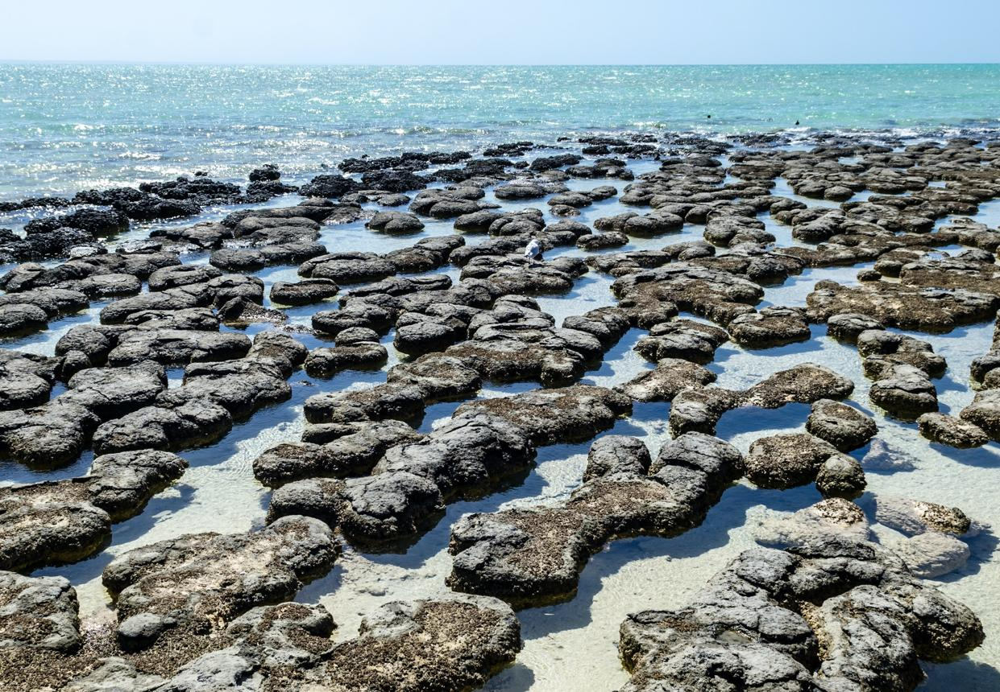
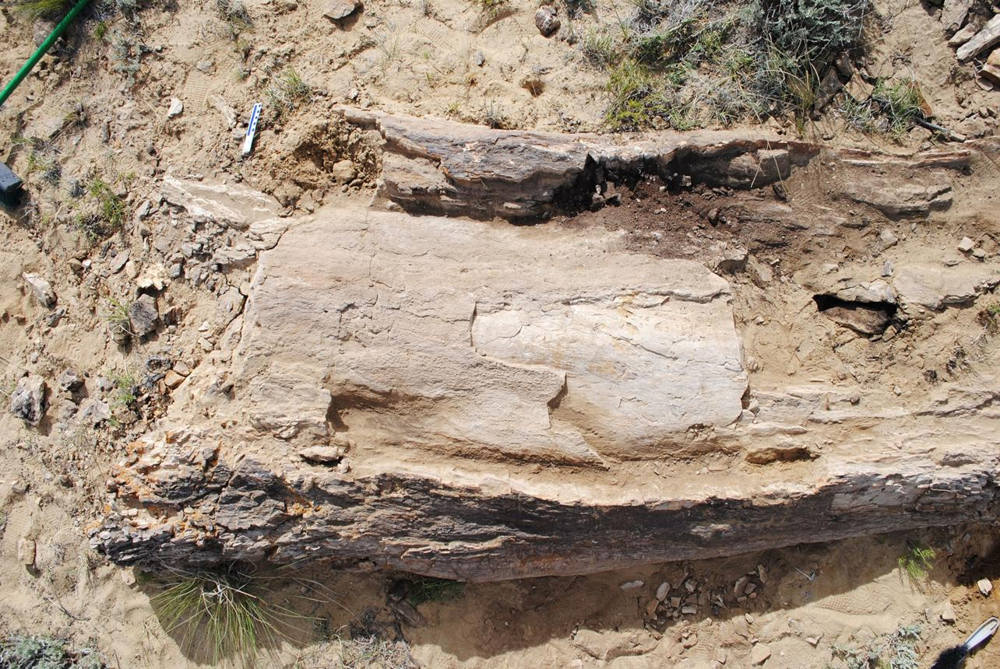
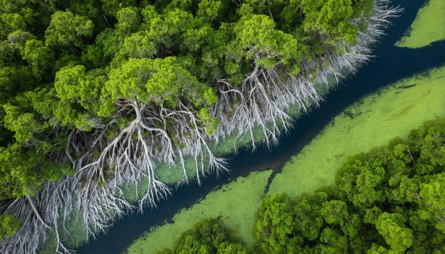

NATURE'S ANSWER TO A WARMING WORLD
Before climate models, there were climate survivors. Before sensors, there were biological sensors. Before resilience became a policy word, nature was practicing it. Before sustainability became a global agenda, nature had been continuously recycling, adapting and regenerating.
THE QUESTION
How does nature continue when the conditions for continuity keep changing?
Today's world:
Warming. Drought. Erratic rainfall. Monsoon shifts. Extreme weather. Ocean heat. Sea-level rise. Pollution. Poor air quality. Ecological degradation.
The contrast:
Humanity is searching for adaptation after the consequences. Nature has been adapting as a condition of existence.
INTRODUCTION:
This article doesn’t begin by explaining climate change again .
The world already has thousands of reports describing the crisis.
Our distinctive question is:
While humanity is searching for technologies to adapt to a warming world, how has nature been adapting, conserving, repairing and continuing — silently, continuously, for millions of years?
That becomes the intellectual backbone of this article.
The central thought:
Humanity responds to climate disruption after the consequences become visible .
Nature does something fundamentally different.
It does not wait for a crisis report, create an emergency committee, install a sensor, or announce a five-year adaptation programme.
It continuously senses, adjusts, conserves, repairs, regenerates and evolves.
Drought comes — roots change their behaviour.
Heat rises — plants regulate water loss.
Rain becomes uncertain — seeds wait.
Floods arrive — wetlands absorb and slow the water.
Winds intensify — trees distribute loads through their architecture.
Coasts are attacked by waves — mangroves build living barriers.
Humidity changes — pinecones respond without electronics.
A forest is damaged — regeneration begins from surviving life.
Nature's response is not a single technology.
It is an operating system.
And that may be the answer humanity has been looking for.

NATURE’S ANSWER TO A WARMING WORLD
Decoding the silent technologies of survival
The world is warming.
Climate change is no longer a distant environmental narrative. Droughts, changing rainfall patterns, shifting monsoons, extreme heat, floods, storms, rising seas, ocean warming, air pollution and ecological degradation are increasingly becoming part of the environment in which human civilisation must operate.
Humanity is responding with extraordinary technological capability.
We build climate models to predict change. Sensors monitor temperature and humidity. Satellites observe forests and oceans. Desalination plants secure freshwater. Renewable energy replaces fossil fuels. Engineers design flood barriers, heat-resistant infrastructure and climate-resilient cities.
Yet there is an intriguing question beneath all this technological progress:
What was nature doing while humanity was still learning how to measure the climate?
For millions of years, biological systems have lived through changing temperatures, droughts, floods, fires, storms, scarcity and competition.
They did not eliminate uncertainty.
They learned to live with it.
They did not wait for perfect conditions.
They developed ways to survive imperfect ones.
They did not depend on a single solution.
They built resilience through interconnected systems.
This is where nature becomes more than something to protect.
Nature becomes something to study.
THE HUMAN RESPONSE: AFTER THE CONSEQUENCE
Much of modern climate action follows a familiar sequence.
A disruption occurs.
We measure its impact.
We declare a crisis.
We search for a technological intervention.
We build infrastructure.
We consume more resources to protect ourselves from the consequences of resource consumption.
This cycle has produced remarkable achievements, but it also reveals a fundamental weakness.
Our systems are often designed for control .
Nature’s systems are designed for continuity .
Humanity asks:
How do we stop this from happening?
Nature often asks:
How do we continue when it happens?
That difference is profound.
A drought is not an exception to nature.
A heat wave is not an unexpected event to a desert ecosystem.
A flood is not necessarily a disaster to a wetland.
A storm is not an unfamiliar phenomenon to a coastal ecosystem.
Nature has spent immense periods of time developing responses to uncertainty.
Its solutions are rarely spectacular.
They are often invisible.
And that is precisely why we overlook them.

NATURE: THE SILENT ADAPTATION ENGINE
Nature does not announce its innovations.
There are no headlines when a plant closes its stomata to reduce water loss.
No press release when a seed remains dormant until conditions become favourable.
No engineering conference when mangrove roots slow waves and trap sediment.
No control room when a pinecone responds to humidity.
No artificial-intelligence dashboard when a forest distributes resources through interconnected biological networks.
Yet these are forms of sensing, adaptation, optimisation, protection and resource management.
They are living technologies .
The remarkable insight is not that nature is better than technology in every situation.
It is that nature often solves problems through principles that our technologies are only beginning to rediscover:
sense → respond → conserve → adapt → regenerate → continue.
This is nature’s quiet architecture of survival.
THE WARMING WORLD: ONE PLANET, MANY RESPONSES
Consider the conditions confronting life today.
Temperature rises.
Water availability becomes uncertain.
Rainfall patterns shift.
Heat arrives earlier or lasts longer.
Oceans absorb enormous quantities of heat.
Sea levels rise.
Air quality deteriorates.
Habitats fragment.
Pollution stresses ecosystems.
Food and water security become increasingly interconnected.
For humanity, these are enormous challenges.
But biological systems are already operating inside this uncertainty.
A tree cannot move to another city when temperatures change.
A mangrove cannot construct a concrete seawall.
A seed cannot switch on an irrigation pump.
A forest cannot import water.
Yet life has developed mechanisms to persist.
The question therefore changes from:
“How do we make nature adapt to us?”
to:
“What can we learn from the ways nature already adapts?”
That is the beginning of our search.
NATURE’S ANSWER
Perhaps nature’s answer to a warming world is not one invention.
It is a philosophy embedded into millions of living systems.
1. SENSE BEFORE RESPONDING
Nature continuously reads its surroundings.
Light. Temperature. Humidity. Water availability. Wind. Soil conditions. Seasonal signals.
Biological systems respond to these signals without requiring a central command centre.
The lesson for humanity is simple:
Do not wait for consequences to become disasters. Build systems that sense change early.
2. CONSERVE BEFORE CONSUMING
Nature is extraordinarily economical.
When water becomes scarce, plants do not simply demand more water.
They alter growth, regulate water loss, change root behaviour and enter survival modes.
The objective is not unlimited consumption.
It is continued existence with limited resources .
This challenges one of humanity’s deepest assumptions:
More resources do not necessarily create more resilience.
Sometimes resilience comes from learning how to use less.
3. DESIGN FOR UNCERTAINTY
Nature rarely assumes that tomorrow will look exactly like today.
Seeds can remain dormant. Roots explore different layers of soil. Species occupy different ecological niches. Ecosystems contain redundancy and diversity.
These mechanisms create options when conditions change.
Modern infrastructure, in contrast, is often optimised for a narrow range of expected conditions.
Nature reminds us:
A resilient system is not the one that performs perfectly under normal conditions.
It is the one that continues functioning when normal conditions disappear.

4. BUILD WITH, NOT AGAINST, THE ENVIRONMENT
Mangroves do not fight the ocean with rigid walls.
They interact with waves, sediments, tides and roots.
Wetlands do not merely resist floods.
They temporarily accommodate water.
Forests do not simply withstand wind.
Their architecture distributes mechanical forces.
Nature often works by absorbing, slowing, redirecting and adapting rather than attempting absolute control.
This is an important lesson for climate-resilient infrastructure.
5. TURN WASTE INTO RESOURCE
In nature, one organism’s output frequently becomes another organism’s input.
Leaves fall. They decompose. Nutrients return to soil. Microorganisms process them. Plants use those nutrients again.
The system continuously cycles materials.
There is no permanent concept of “waste” in a healthy ecosystem.
This is radically different from many human production systems.
Nature asks us to reconsider:
What if waste is simply a resource that has not yet found its next use?
6. DIVERSITY IS INSURANCE
A monoculture can be highly productive under stable conditions.
But diversity provides options when conditions change.
Different species tolerate different temperatures. Different plants use water differently. Different organisms occupy different ecological roles.
When one component struggles, others may continue.
Nature does not place the survival of an ecosystem entirely on one technology, one species or one pathway.
Diversity is not inefficiency. It is resilience.
7. REPAIR IS BUILT INTO THE SYSTEM
Nature does not wait for everything to be destroyed before beginning restoration.
A fallen tree becomes habitat. A damaged ecosystem begins succession. Roots stabilise soil. Seeds recolonise disturbed land. Microorganisms restore nutrient cycles.
Regeneration begins from whatever survives.
Nature therefore contains something that many human systems struggle to achieve:
recovery as a continuous process rather than an emergency project.
THE PARADOX OF THE 21ST CENTURY
Here lies one of the greatest paradoxes of our technological age.
Humanity has developed artificial intelligence, satellites, robotics, advanced materials, genetic technologies, sensors and enormous computing power.
Yet a small biological system can sometimes perform an extraordinarily elegant task using sunlight, water, chemistry and information encoded through evolution.
A pinecone can respond to humidity.
A leaf can regulate water exchange.
A root can explore the soil.
A mangrove can protect a coastline.
A seed can wait.
A forest can regenerate.
None of these systems requires a software update.
They have been continuously refined through deep time.
The lesson is not that humanity should abandon technology.
Quite the opposite.
The next generation of technology may become more powerful when it begins learning from biology rather than merely attempting to replace it.
FROM SUSTAINABILITY TO CONTINUITY
This leads to a deeper question.
Sustainability asks:
How can we reduce the damage caused by our activities?
That is necessary.
But perhaps it is not sufficient.
The larger question is:
How do we design civilisation so that it can continue under changing conditions?
That is the territory of continuity .
Nature does not merely sustain a forest.
It continuously renews it.
It does not merely conserve water.
It continuously moves, stores, filters and recycles it.
It does not merely protect a coastline.
It continuously builds and rebuilds ecological barriers.
It does not merely survive a disturbance.
It reorganises and continues.
This is why the next step beyond sustainability may be to understand continuity as a design principle .
THE ANSWER WE ARE LOOKING FOR
Perhaps nature’s answer to a warming world can be expressed in one simple sequence:
SENSE → ADAPT → CONSERVE → CONNECT → REGENERATE → CONTINUE
Nature does not promise a world without disruption.
It demonstrates how life can continue despite disruption.
That distinction may become increasingly important as the climate becomes more uncertain.
The future will not be secured by one technology.
It will require systems that can sense change, conserve resources, adapt continuously, work with natural processes, recover from disturbance and regenerate themselves.
We already have billions of years of examples around us.
They are growing in forests.
They are hidden in seeds.
They are moving through oceans.
They are embedded in roots.
They are written into leaves.
They are operating in wetlands.
They are responding silently to every sunrise, rainfall, drought, wind and season.
We have called them ecosystems.
Perhaps we should also call them:
BLUEPRINTS.
The search for the answer to a warming world may therefore require us to look not only into laboratories, satellites and supercomputers—
but also beneath a leaf,
inside a seed,
along a coastline,
within a forest,
and across the silent architecture of life itself.
Nature has been answering the climate question for millions of years.
The question is no longer whether nature has an answer.
The question is whether humanity is ready to decode it.